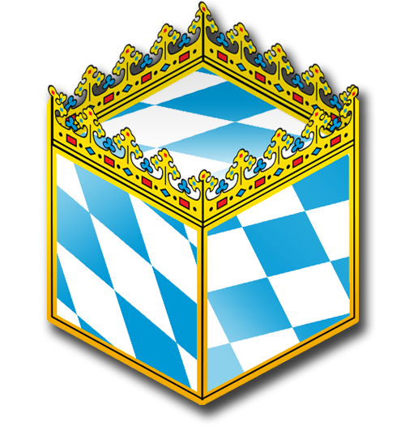
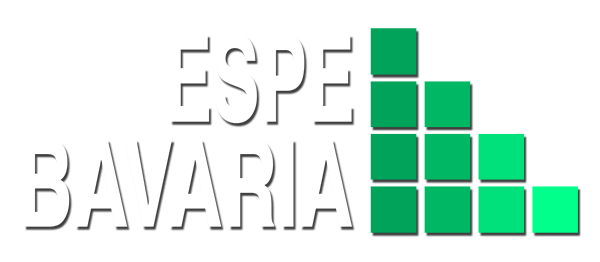

Active Project
Bavarian Data Cube
About the Project
Emission Sources from EO Data for Improved Pollen Forecasting
Currently, more than 20% of adults and 15% of children and adolescents suffer from an allergic-atopic disease. In Bavaria, this includes about 2 million adults and 300,000 children and adolescents.
Thereby, about 80% of all allergy sufferers are pollen allergy sufferers. These diseases caused total costs of about 600 million euros in Bavaria in 2013. The goal of the Bavarian state government is therefore a valid and practicable pollen forecast, which is characterized by both the highest possible spatial resolution and the earliest possible prediction.
The ESPE project aims to optimize pollen modeling by incorporating current high-resolution forest and open-land maps of Bavaria into forecast models. For this purpose, freely available satellite-based Earth observation data of the Copernicus Sentinels and innovative "Data Cube" spatial data infrastructures are used.

Project Goals
- Improve baseline mapping of grassland and forest distribution using Sentinel-2 data
- Optimize remote sensing coverage of forest types and grassland as pollen sources
- Analyse potential improvements to pollen forecasting through integrated land cover data
Facts & Figures
Data & Infrastructure
- Over 13,000 high-resolution Sentinel-2 satellite images
- More than 12 TeraBytes of atmosphere-corrected Analysis Ready Data (ARD)
- Coverage period: 2015–2020 and ongoing
- Data access via custom Jupyter Notebooks